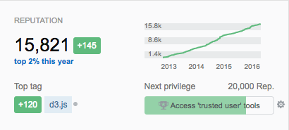

<!DOCTYPE html><html></html><head><meta charset="utf-8"><title>Next Level D3</title><meta name="description" content="Slides from my &quot;Advanced D3&quot; talk"><meta name="author" content="Amit Schechter"><meta name="apple-mobile-web-app-capable" content="yes"><meta name="apple-mobile-web-app-status-bar-style" content="black-translucent"><meta name="viewport" content="width=device-width, initial-scale=1.0, maximum-scale=1.0, user-scalable=no"><link rel="stylesheet" href="css/reveal.min.css"><link rel="stylesheet" href="css/theme/serif.css" id="theme"><link rel="stylesheet" href="lib/css/zenburn.css"><style>.reveal {
  cursor:pointer;
}

.right-hand {
  text-align: right;
  float: right
}
.reveal pre code, .reveal pre .code {
  padding: 20px;
}
.reveal .right-hand pre {
  width: auto;
  margin: 0;
}
.reveal .right-hand pre code {
  padding: 20px 40px;
  max-height: none;
}

//- .code-context {}
.reveal pre.code-left {
  float: left;
  width: 48%;
  font-size: .45em;
}
.reveal pre.code-right {
  width: 48%;
  float: right;
  font-size: .45em;
}
.reveal pre.code-fullwidth {
  width: 100%;
}

.reveal .link-frame {
  background: white;
  border: 1px solid #aaa;
  padding: 40px 60px;
  display:inline-block;
}
.reveal .link-frame a {
  color: #0099ff;
}
</style><body><div class="reveal"><div class="slides"><section><h1>next level d3</h1><p style="line-height:.8; margin-bottom:0;"><small>By <a href="http://two-n.com">Amit Schechter</a> / <a href="http://twitter.com/meetamit">@meetamit</a></small><br><small>Co-founder, <a href="http://two-n.com">TWO-N</a></small><br><a href="http://two-n.com" style="display:inline-block; opacity:.6; background:url(lib/img/2n_logo.png) no-repeat center center; background-size:contain; width:90px; height:90px;"></a><br></p><br><p>Slides available at<br><a href="http://www.two-n.com/talks/next-level-d3">www.two-n.com/talks/next-level-d3</a></p></section><section><section data-background="http://two-n.com/projects/art-genome-browser/1.jpg" data-background-size="contain"></section><section data-background="http://two-n.com/projects/art-genome-browser/2.jpg" data-background-size="contain"></section><section data-background="http://two-n.com/projects/art-genome-browser/3.jpg" data-background-size="contain"></section><section data-background="http://two-n.com/projects/art-genome-browser/5.jpg" data-background-size="contain"></section><section data-background="http://two-n.com/projects/lgbt-divide/3.jpg" data-background-size="contain"></section><section data-background="http://two-n.com/projects/lgbt-divide/4.jpg" data-background-size="contain"></section><section data-background="http://two-n.com/projects/stockmapper/1.jpg" data-background-size="contain"></section><section data-background="http://two-n.com/projects/stockmapper/2.jpg" data-background-size="contain"></section><section data-background="lib/img/talent-lab_1.png" data-background-size="contain"></section><section data-background="lib/img/talent-lab_2.png" data-background-size="contain"></section><section data-background="lib/img/talent-lab_3.png" data-background-size="contain"></section><section><iframe src="https://player.vimeo.com/video/125092880?autoplay=1&color=ff9933&title=0&byline=0" width="800" height="600" frameborder="0" webkitallowfullscreen mozallowfullscreen allowfullscreen></iframe></section><section data-background="http://two-n.com/projects/wind4d/2.jpg" data-background-size="contain"></section><section><h2>Current stack</h2><ul><li>d3</li><li class="fragment">React</li><li class="fragment">Node.js</li></ul><p></p></section><section><h2 data-markdown>[two-n.com](http://www.two-n.com)</h2><h2 data-markdown>[@2nfo](http://www.twitter.com/2nfo)</h2><h2 data-markdown>[@meetamit](http://www.twitter.com/meetamit)</h2></section></section><section data-background-iframe="lib/iframe-content.html"><h4 class="link-frame fragment"><span>Part 1:&nbsp;<a href="http://bl.ocks.org/mbostock/3808218" target="_blank">bl.ocks.org/mbostock/3808218</a><br></span><span>Part 2:&nbsp;<a href="http://bl.ocks.org/mbostock/3808221" target="_blank">bl.ocks.org/mbostock/3808221</a><br></span><span>Part 3:&nbsp;<a href="http://bl.ocks.org/mbostock/3808234" target="_blank">bl.ocks.org/mbostock/3808234</a><br></span></h4></section><section><h3 data-markdown>Render **everything** in *update*()</h3></section><section data-background-iframe="lib/iframe-content.html"><div class="right-hand fragment"><pre style="margin-top:280px;"><code class="javascript">// The initial display.
update(alphabet);

// Grab a random sample of letters
setInterval(function() {
  update(shuffle(alphabet)
      .slice(0, Math.floor(
        Math.random() * 26
      ))
      .sort());
}, 1500);
</code></pre></div></section><section><h3 data-markdown>More understandable code</h3></section><section data-background-iframe="lib/iframe-content.html"><div class="right-hand"><h4>update()</h4><pre><code class="javascript">function update(data) {

  // DATA JOIN
  var text = svg.selectAll("text")
      .data(data);

  // EXIT
  text.exit()
      .attr("class", "exit")
    .transition()
      .attr("y", 60)
      ...
      .remove();

  // UPDATE
  text.attr("class", "update")
    .transition()
      .attr("x", function(d, i) { return i * 32; });

  // ENTER
  text.enter().append("text")
      .attr("class", "enter")
      ...
}
</code></pre></div></section><section><h3 data-markdown>Don't care about what changed —</h3><h3 data-markdown>Only that *something* changed</h3><h4 class="fragment">... less bugs</h4></section><section><h3 data-markdown>Integrates well with other frameworks</h3></section><section><section><h4>With Backbone</h4><pre><code class="javascript">var ChartView = Backbone.View.extend({
  // a.k.a update()
  render: function() {
    d3.select(this.el).selectAll("text")
      .data(this.model);
    // Update, Enter, Exit
    ...
  }
});</code></pre></section><section><h4>With React</h4><pre><code class="coffeescript">React.createClass({
  render: function() {
    return <div ref="node" className="node"></div>;
  },

  componentDidUpdate: function() {
    sel = d3.select(this.refs.node).selectAll('.child')
      .data(this.props.data)
    // Update, Enter, Exit
    ...
  },

  componentDidMount: function() {
    this.forceUpdate();
  }
});</code></pre></section><section><ul><h3>Drawbacks of rendering everything?</h3><li class="fragment">Possibly some unnecessary re-joining and updating</li><li class="fragment">... probably not a problem</li><li class="fragment">Don't pre-optimize</li><li class="fragment">You can later add checks for actual state changes</li></ul></section></section><section><section><h2>Conditional Element Creation</h2></section><section><h4>(That's not it)</h4><pre><code class="javascript">// Create svg upon initialization
var svg = d3.select("body").append("svg")

function update(data) {
  // DATA JOIN
  var text = svg.selectAll("text")
      .data(data);
  ...
}</code></pre><h4 class="fragment">We want to move svg creation into update()</h4></section><section><h4>(Definitely not it)</h4><pre><code class="javascript">function update(data) {
  // WRONG!!! Creates another svg on every update
  var svg = d3.select("body").append("svg")

  // DATA JOIN
  var text = svg.selectAll("text")
      .data(data);
  ...
}</code></pre></section><section><h4>Using if statement</h4><pre class="highlight"><div class="code javascript"><span>function update(data) {</span><span data-fragment-index="1" class="fragment">&nbsp;
  var svg = d3.select("body").select("svg")</span><span data-fragment-index="2" class="fragment">&nbsp;
  if (svg.empty()) {</span><span data-fragment-index="3" class="fragment">&nbsp;
    // Conditionally create the SVG
    svg = d3.select("body").append("svg")</span><span data-fragment-index="2" class="fragment">&nbsp;
  }
</span><span>&nbsp;
  // DATA JOIN
  var text = svg.selectAll("text")
      .data(data);
}</span></div></pre><h4 class="fragment">Ok, but iffy</h4></section></section><section><section><h2>The [null] trick</h2><h4>Use D3's enter, update, exit selections</h4></section><section><h4>The [null] trick</h4><pre class="highlight"><div class="code javascript"><span>// Conditionally create the SVG
var svg = d3.select("body").selectAll("svg")</span><span class="fragment">&nbsp;
      .data([null])
</span><span class="fragment">&nbsp;
svg.enter() // a 1-element selection the first time ONLY
  .append("svg")</span><span class="fragment">&nbsp;
  .attr("width", width)
  .attr("height", height);</span></div></pre></section><section><h4>The [null] trick</h4><pre><code class="javascript">function update(data) {
  // Conditionally create the SVG
  var svg = d3.select("body").selectAll("svg")
        .data([null])
      .enter()
        .append("svg")

  // DATA JOIN
  var text = svg.selectAll("text")
      .data(data);
  ...
}</code></pre></section></section><section><section><h2>Example: Responsiveness</h2><h4>Easy when everything is inside update()</h4></section><section><h4>Responsiveness</h4><pre class="highlight"><div class="code javascript"><span>d3.select(window).on("resize", update);

function update() {</span><span data-fragment-index="1" class="fragment">&nbsp;
  var width  = window.width  - margin * 2,
      height = window.height - margin * 2,
      enabled = width > 200;// only show chart if there's room
</span><span data-fragment-index="2" class="fragment">&nbsp;
  var svg = d3.select("body").selectAll("svg")
        .data(enabled ? [null] : [])
</span><span data-fragment-index="4" class="fragment">&nbsp;
  svg.merge(</span><span data-fragment-index="3" class="fragment">&nbsp;
    svg.enter().append("svg")</span><span data-fragment-index="4" class="fragment">&nbsp;
  )
  .attr("width", width)
  .attr("height", height);
</span><span data-fragment-index="5" class="fragment">&nbsp;
  svg.exit()
    .remove()</span><span>&nbsp;
}
</span></div></pre></section></section><section><section><h2 data-markdown>selection.**each**()</h2></section><section><h3 data-markdown>selection.**each**( *function* )</h3><p data-markdown>Invokes the specified *function* for each element in the current selection, passing in the current datum `d` and index `i`, with the `this` context of the current DOM element.</p><pre class="highlight"><div class="code javascript"><span>svg.selectAll("rect.bar")
  .each(function(d, i) {</span><span class="fragment">&nbsp;
    console.log(this); // &lt;rect class="bar">&lt;/rect></span><span>&nbsp;
  })
</span></div></pre></section><section><h3 data-markdown>selection.**each**( *function* )</h3><pre><code class="javascript">svg.selectAll("circle")
  .attr("cx",   function(d,i) { return xScale(d.unemployment); })
  .attr("cy",   function(d,i) { return yScale(d.debt);         })
  .attr("r",    function(d,i) { return rScale(d.gdp);          })
  .attr("fill", function(d,i) { return colorScale(i);          });</code></pre><h3>⇕</h3><pre class="highlight"><div class="code javascript"><span>svg.selectAll("circle")
  .each(function(d,i) {</span><span class="fragment">&nbsp;
    d3.select(this)</span><span class="fragment">&nbsp;
      .attr("cx",   xScale(d.unemployment))
      .attr("cy",   yScale(d.debt)        )
      .attr("r",    rScale(d.gdp)         )
      .attr("fill", colorScale(i)         );</span><span>&nbsp;
  })</span></div></pre></section></section><section><section><h2 data-markdown>Reasons to use .**each**()?</h2></section><section><h4>Less re-computation</h4><pre class="highlight"><div class="code javascript"><span>svg.selectAll("circle")
  .each(function(d,i) {
    var centroid = computeCentroid(d.pointCloud);// [43, 21]</span><span class="fragment">&nbsp;
    d3.select(this)
      .attr("cx", centroid[0])
      .attr("cy", centroid[1]);</span><span>&nbsp;
  })</span></div></pre></section><section><h4>Flow Control</h4><pre class="highlight"><div class="code javascript"><span>svg.selectAll(".shape")
  .each(function(d,i) {
    var centroid = computeCentroid(d.pointCloud);</span><span class="fragment">&nbsp;
    if(d.shape == "circle") {
      d3.select(this)
        .attr("cx", centroid[0])
        .attr("cy", centroid[1]);
    }</span><span class="fragment">&nbsp;
    if(d.shape == "rect") {
      d3.select(this)
        .attr("x", centroid[0])
        .attr("y", centroid[1]);
    }</span><span>&nbsp;
  })</span></div></pre></section></section><section><section><h3 data-markdown>.**each**() with nested data</h3></section><section data-background-iframe="http://bost.ocks.org/mike/nest/"></section><section><h3 data-markdown>.**each**() with nested data</h3><pre class="code-left"><code class="javascript">var data = [
  { gdp:123, unemp:9, label:"Greece" },
  { gdp:456, unemp:7, label:"France" },
  { gdp:789, unemp:5, label:"USA"    },
  ...
]</code></pre><pre class="fragment code-right"><code class="javascript">var tr = table.selectAll("tr")
  .data(data);
tr.enter()
  .append("tr");
&nbsp;
&nbsp;</code></pre><pre style="clear:both;" class="fragment highlight code-fullwidth"><div class="code javascript"><span>tr
  .each(function(entity, i) {</span><span class="fragment current-visible">&nbsp;
    console.log(this); // &lt;tr>&lt;/tr></span><span class="fragment">&nbsp;
    var td = d3.select(this).selectAll("td")
      .data([entity.label, entity.gdp, entity.unemp])</span><span class="fragment current-visible">&nbsp;
    // ["Greece", 123, 9]</span><span class="fragment">&nbsp;
    td.enter()
      .append("td")</span><span class="fragment">&nbsp;
    td
      .text(function(variable, j) {
        return variable;
      })</span><span>&nbsp;
  })
</span></div></pre></section><section><h3 data-markdown>Nested Selections</h3><pre class="code-left"><code class="javascript">var data = [
  { gdp:123, unemp:9, label:"Greece" },
  { gdp:456, unemp:7, label:"France" },
  { gdp:789, unemp:5, label:"USA"    },
  ...
]</code></pre><pre class="code-right"><code class="javascript">var tr = table.selectAll("tr")
  .data(data);
tr.enter()
  .append("tr");
&nbsp;
&nbsp;</code></pre><pre style="clear:both;" class="highlight fragment code-fullwidth"><div class="code javascript"><span>var td = tr.selectAll("td")
  .data(function(entity, i) {</span><span class="fragment current-visible">&nbsp;// e.g. { gdp:789, unemp:5, label:"USA" }</span><span class="fragment">&nbsp;
    return [entity.label, entity.gdp, entity.unemp]</span><span>&nbsp;
  })</span><span class="fragment">&nbsp;
td.enter()
  .append("td")
td
  .text(function(variable, j) {
    return variable;
  })</span></div></pre></section><section><h3 data-markdown>.**each**( *function* ) vs .**data**( *function* )</h3><pre class="highlight code-left"><div class="code javascript"><span>tr.each(function(d, i) {
  var td = d3.select(this).selectAll("td")</span><span data-fragment-index="1" class="fragment">&nbsp;
    .data([d.label, d.gdp, d.unemp]);
</span><span data-fragment-index="2" class="fragment">&nbsp;
  td.enter()
    .append("td");</span><span data-fragment-index="3" class="fragment">&nbsp;
  td
    .text(function(variable, j) {
      return variable;
    })</span><span data-fragment-index="4" class="fragment">&nbsp;

  color = d.unemp < 7 ? "red" : "black";
  td.style("color", color);</span><span>&nbsp;
});
&nbsp;
&nbsp;
&nbsp;
&nbsp;</span></div></pre><pre class="highlight code-right"><div class="code javascript"><span>var td = tr.selectAll("td")</span><span data-fragment-index="1" class="fragment">&nbsp;
  .data(function(d, i) {
    return [d.label, d.gdp, d.unemp];
  });
</span><span data-fragment-index="2" class="fragment">&nbsp;
td.enter()
  .append("td");</span><span data-fragment-index="3" class="fragment">&nbsp;
td
  .text(function(variable, j) {
    return variable;
  })</span><span data-fragment-index="5" class="fragment">&nbsp;
  .style("color", function(variable, j) {</span><span data-fragment-index="6" class="fragment">&nbsp;
    // this <=> &lt;td>&lt;/td>
    // this.parentNode <=> &lt;tr>&lt;/tr></span><span data-fragment-index="7" class="fragment">&nbsp;
    var d = d3.select(this.parentNode)
      .datum();
    return d.unemp < 7 ? "red" : "black";</span><span data-fragment-index="5" class="fragment">&nbsp;
  })</span></div></pre><p style="padding-top:150px; font-size:.9em;">⇔</p></section></section><section><section><h2 data-markdown>selection.**call**()</h2></section><section><h3 data-markdown>selection.**call**( *function* )</h3><p data-markdown>Invokes the specified function once, passing in the current selection along with any optional arguments.</p><pre class="highlight"><div class="code javascript"><span>var g = svg.selectAll("g");
</span><span class="fragment">&nbsp;
function fn(sel) {
  sel.attr("color", "red")
}
</span><span class="fragment">&nbsp;
fn(g) ⇔ g.call(fn)</span><span class="fragment">&nbsp;
&nbsp;
g.call(function(sel) {
  sel.attr("color", "red")
})</span></div></pre></section></section><section><section><h2>Use .call() to organize code</h2><h4><a href="http://williamsinstitute.law.ucla.edu/lgbtdivide/#/education/2" target="_blank">Demo</a></h4></section><section data-background-iframe="http://prototypes.two-n.com/williams/#/education/2"><pre class="highlight fragment code-left"><div class="code javascript"><span>var g = svg.selectAll("g")
  .data(regions);</span><span class="fragment">&nbsp;
&nbsp;
var gEnter = g.enter()
  .append("g")
  .__ // Create g</span><span class="fragment">&nbsp;
&nbsp;
gEnter.append("circle")
  .attr("class", "solid-circle")
  .__ // Create SOLID circle</span><span class="fragment">&nbsp;
&nbsp;
gEnter.append("circle")
  .attr("class", "dashed-circle")
  .__ // Create DASHED circle</span><span class="fragment">&nbsp;
&nbsp;
&nbsp;
var merged = g.merge(gEnter)
  .attr("transform", function(d,i) {})
  .__ // Update g</span><span class="fragment">&nbsp;
&nbsp;
merged.select('.solid-circle')
  .attr("r", function(d,i) {
    return rScale(d.specific);
  })
  .__ // Update SOLID circle</span><span class="fragment">&nbsp;
&nbsp;
merged.select('.dashed-circle')
  .attr("r", function(d,i) {
    return rScale(d.general);
  })
  .__ // Update DASHED circle</span></div></pre><pre class="highlight fragment code-right"><div class="code javascript"><span>var g = svg.selectAll("g")
  .data(regions);
&nbsp;
var gEnter = g.enter()
  .append("g")
  .__ // Create g
  .call(function(gEnter) {</span><span class="fragment">&nbsp;
    gEnter.append("circle")
      .attr("class", "solid-circle")
      .__ // Create SOLID circle

    gEnter.append("circle")
      .attr("class", "dashed-circle")
      .__ // Create DASHED circle</span><span>&nbsp;
  });

g.merge(gEnter)
  .__ // Update g
  .call(function(merged) {</span><span class="fragment">&nbsp;
    merged.select('.solid-circle')
      .attr("r", function(d,i) {
        return rScale(d.specific);
      })
      .__ // Update SOLID circle
&nbsp;
    merged.select('.dashed-circle')
      .attr("r", function(d,i) {
        return rScale(d.general);
      })
      .__ // Update DASHED circle</span><span>&nbsp;
  });</span></div></pre><p style="padding-top:150px; font-size:.9em;" class="fragment">⇔</p></section><section><h3>Refactoring</h3><pre class="highlight"><div class="code javascript"><span>var g = svg.selectAll("g")
  .data(regions);

var gEnter = g.enter()
  .append("g")
  .call(createSymbol);

g.merge(gEnter)
  .call(updateSymbol);
</span><span class="fragment">&nbsp;
function createSymbol(gEnter) {
  // create circles
}

function updateSymbol(g) {
  // update circles
}</span></div></pre></section></section><section><section><h2>Can we do better?</h2><h4 class="fragment">(yes)</h4></section><section data-background-iframe="http://codepen.io/meetamit/full/NPNaXQ/"><section><h3>Single update function</h3><pre class="highlight"><div class="code javascript"><span>var g = svg.selectAll("g")
  .data(regions);
</span><span data-fragment-index="2" class="fragment">&nbsp;
g.merge(</span><span data-fragment-index="1" class="fragment">&nbsp;
  g.enter().append("g")</span><span data-fragment-index="2" class="fragment">&nbsp;
)</span><span data-fragment-index="3" class="fragment">&nbsp;
.call(symbol);

function symbol(sel) {
  // create & update circles
}</span></div></pre><p data-markdown class="fragment">**symbol()** is [reusable](http://codepen.io/meetamit/full/NPNaXQ/)</p></section></section></section><section><section><h2>Writing Reusable Code</h2></section><section data-background-iframe="http://bost.ocks.org/mike/chart/"><h4 class="link-frame fragment"><a href="http://bost.ocks.org/mike/chart/">http://bost.ocks.org/mike/chart/</a></h4></section></section><section><section><h2>d3-axis is reusable</h2></section><section><h3><em>axis</em><span data-fragment-index="3" class="fragment">&nbsp;is a<em>&nbsp;function</em></span><span data-fragment-index="5" class="fragment">&nbsp;that has<em>&nbsp;functions</em></span></h3><pre class="highlight"><div class="code javascript"><span>var axis = d3.axisBottom();
</span><span data-fragment-index="1" class="fragment">var g = svg.append("g");

g.call(axis);</span><span data-fragment-index="2" class="fragment">&nbsp;// ⇔ axis(g)</span><span data-fragment-index="4" class="fragment">&nbsp;
&nbsp;
axis.scale(d3.scaleLinear());</span></div></pre></section></section><section><section><h3>Functions can have functions</h3></section><section><h3 data-markdown>*function* that has *function*</h3><pre class="highlight"><div class="code javascript"><span data-fragment-index="6" class="fragment">&nbsp;
var color = "gray";</span><span>&nbsp;
function colorize(sel) {</span><span data-fragment-index="5" class="fragment">&nbsp;
  sel.attr("fill", color);</span><span>&nbsp;
}</span><span data-fragment-index="3" class="fragment">&nbsp;
&nbsp;
colorize.color = function(arg) {</span><span data-fragment-index="7" class="fragment">&nbsp;
  color = arg;</span><span data-fragment-index="8" class="fragment">&nbsp;
  return colorize;</span><span data-fragment-index="3" class="fragment">&nbsp;
};
</span><span data-fragment-index="4" class="fragment">&nbsp;
colorize.color("orange"); // has functions</span><span data-fragment-index="1" class="fragment">&nbsp;
colorize(sel); // is a function</span><span data-fragment-index="2" class="fragment">&nbsp;
&nbsp;
// OR
&nbsp;
d3.selectAll("circle")
  .call(colorize</span><span data-fragment-index="9" class="fragment">.color("orange")</span><span data-fragment-index="2" class="fragment">);</span></div></pre></section><section><h3 data-markdown>*function* that has *function*</h3><pre class="highlight"><div class="code javascript"><span>&nbsp;
var color = "gray";
function colorize(sel) {
  sel.attr("fill", color);
}
&nbsp;
colorize.color = function(arg) {
  color = arg;
  return colorize;</span><span>&nbsp;
};</span><span data-fragment-index="3" class="fragment">&nbsp;
&nbsp;
&nbsp;
&nbsp;
d3.selectAll("rect")
  .call(colorize.color("cyan"));</span><span>&nbsp;
&nbsp;
d3.selectAll("circle")
  .call(colorize.color("orange"));</span></div></pre></section><section><h3 data-markdown>*function* that has *function*</h3><pre class="highlight"><div class="code javascript"><span data-fragment-index="2" class="fragment">d3.colorize = function() {</span><span>&nbsp;
  var color = "gray";
  function colorize(sel) {
    sel.attr("fill", color);
  };
  &nbsp;
  colorize.color = function(arg) {</span><span data-fragment-index="4" class="fragment">&nbsp;
    if (arguments.length == 0) { return color; }</span><span>&nbsp;
    color = arg;
    return colorize;
  }</span><span data-fragment-index="2" class="fragment">&nbsp;
  return colorize;
}</span><span data-fragment-index="3" class="fragment">&nbsp;
&nbsp;
var colorize = d3.colorize();
&nbsp;</span><span>&nbsp;
d3.selectAll("circle")
  .call(colorize.color("orange"));</span></div></pre></section><section><h2>What did we achieve?</h2><h4 class="fragment">Separated function calling from argument passing</h4><h4 class="fragment">Created reusable code</h4><h4 class="fragment">Defined a "class", d3 style</h4><h4 class="fragment">(Moved messy code out of the way)</h4><h4 class="fragment">Now you know how to read the d3 source</h4></section><section><h3>d3.axis()</h3><pre><code class="javascript">import {slice} from "./array";
import identity from "./identity";

var top = 1,
    right = 2,
    bottom = 3,
    left = 4,
    epsilon = 1e-6;

function translateX(scale0, scale1, d) {
  var x = scale0(d);
  return "translate(" + (isFinite(x) ? x : scale1(d)) + ",0)";
}

function translateY(scale0, scale1, d) {
  var y = scale0(d);
  return "translate(0," + (isFinite(y) ? y : scale1(d)) + ")";
}

function center(scale) {
  var offset = scale.bandwidth() / 2;
  if (scale.round()) offset = Math.round(offset);
  return function(d) {
    return scale(d) + offset;
  };
}

function entering() {
  return !this.__axis;
}

function axis(orient, scale) {
  var tickArguments = [],
      tickValues = null,
      tickFormat = null,
      tickSizeInner = 6,
      tickSizeOuter = 6,
      tickPadding = 3;

  function axis(context) {
    var values = tickValues == null ? (scale.ticks ? scale.ticks.apply(scale, tickArguments) : scale.domain()) : tickValues,
        format = tickFormat == null ? (scale.tickFormat ? scale.tickFormat.apply(scale, tickArguments) : identity) : tickFormat,
        spacing = Math.max(tickSizeInner, 0) + tickPadding,
        transform = orient === top || orient === bottom ? translateX : translateY,
        range = scale.range(),
        range0 = range[0] + 0.5,
        range1 = range[range.length - 1] + 0.5,
        position = (scale.bandwidth ? center : identity)(scale.copy()),
        selection = context.selection ? context.selection() : context,
        path = selection.selectAll(".domain").data([null]),
        tick = selection.selectAll(".tick").data(values, scale).order(),
        tickExit = tick.exit(),
        tickEnter = tick.enter().append("g").attr("class", "tick"),
        line = tick.select("line"),
        text = tick.select("text"),
        k = orient === top || orient === left ? -1 : 1,
        x, y = orient === left || orient === right ? (x = "x", "y") : (x = "y", "x");

    path = path.merge(path.enter().insert("path", ".tick")
        .attr("class", "domain")
        .attr("stroke", "#000"));

    tick = tick.merge(tickEnter);

    line = line.merge(tickEnter.append("line")
        .attr("stroke", "#000")
        .attr(x + "2", k * tickSizeInner)
        .attr(y + "1", 0.5)
        .attr(y + "2", 0.5));

    text = text.merge(tickEnter.append("text")
        .attr("fill", "#000")
        .attr(x, k * spacing)
        .attr(y, 0.5)
        .attr("dy", orient === top ? "0em" : orient === bottom ? "0.71em" : "0.32em"));

    if (context !== selection) {
      path = path.transition(context);
      tick = tick.transition(context);
      line = line.transition(context);
      text = text.transition(context);

      tickExit = tickExit.transition(context)
          .attr("opacity", epsilon)
          .attr("transform", function(d) { return transform(position, this.parentNode.__axis || position, d); });

      tickEnter
          .attr("opacity", epsilon)
          .attr("transform", function(d) { return transform(this.parentNode.__axis || position, position, d); });
    }

    tickExit.remove();

    path
        .attr("d", orient === left || orient == right
            ? "M" + k * tickSizeOuter + "," + range0 + "H0.5V" + range1 + "H" + k * tickSizeOuter
            : "M" + range0 + "," + k * tickSizeOuter + "V0.5H" + range1 + "V" + k * tickSizeOuter);

    tick
        .attr("opacity", 1)
        .attr("transform", function(d) { return transform(position, position, d); });

    line
        .attr(x + "2", k * tickSizeInner);

    text
        .attr(x, k * spacing)
        .text(format);

    selection.filter(entering)
        .attr("fill", "none")
        .attr("font-size", 10)
        .attr("font-family", "sans-serif")
        .attr("text-anchor", orient === right ? "start" : orient === left ? "end" : "middle");

    selection
        .each(function() { this.__axis = position; });
  }

  axis.scale = function(_) {
    return arguments.length ? (scale = _, axis) : scale;
  };

  axis.ticks = function() {
    return tickArguments = slice.call(arguments), axis;
  };

  axis.tickArguments = function(_) {
    return arguments.length ? (tickArguments = _ == null ? [] : slice.call(_), axis) : tickArguments.slice();
  };

  axis.tickValues = function(_) {
    return arguments.length ? (tickValues = _ == null ? null : slice.call(_), axis) : tickValues && tickValues.slice();
  };

  axis.tickFormat = function(_) {
    return arguments.length ? (tickFormat = _, axis) : tickFormat;
  };

  axis.tickSize = function(_) {
    return arguments.length ? (tickSizeInner = tickSizeOuter = +_, axis) : tickSizeInner;
  };

  axis.tickSizeInner = function(_) {
    return arguments.length ? (tickSizeInner = +_, axis) : tickSizeInner;
  };

  axis.tickSizeOuter = function(_) {
    return arguments.length ? (tickSizeOuter = +_, axis) : tickSizeOuter;
  };

  axis.tickPadding = function(_) {
    return arguments.length ? (tickPadding = +_, axis) : tickPadding;
  };

  return axis;
}

export function axisTop(scale) {
  return axis(top, scale);
}

export function axisRight(scale) {
  return axis(right, scale);
}

export function axisBottom(scale) {
  return axis(bottom, scale);
}

export function axisLeft(scale) {
  return axis(left, scale);
}
</code></pre></section></section><section><section><h2>UI with D3</h2></section></section><section data-background-iframe="http://codepen.io/meetamit/full/MwYGdZ"><section><h3>Data as View Model</h3><h4 class="link-frame fragment"><a href="http://codepen.io/meetamit/full/MwYGdZ" target="_blank">codepen.io/meetamit/full/MwYGdZ</a></h4></section><section><pre class="highlight"><div class="code javascript">var buttons = [
  { label: "A", rgb: "#ffdd99" },
  { label: "B", rgb: "#aaffdd" },
  { label: "C", rgb: "#ffaaee" },
  { label: "D", rgb: "#aaff99" }
];</div></pre><pre class="highlight fragment"><div class="code javascript">function update() {
  var btn = d3.select("body").selectAll("button")
    .data(buttons);
  btn.enter()
    .append("button")
    .attr("class", "btn")
    .text(function(d) { return d.label; })
}</div></pre></section><section><h3 data-markdown>State selection</h3><pre class="highlight"><div class="code javascript"><span>var selected = buttons[1]; // { label: "B", rgb: "#aaffdd" }

function update() {
  // ....</span><span data-fragment-index="1" class="fragment">&nbsp;
  btn
    .classed("selected", function(d, i) {
      return d == selected;
    })</span><span data-fragment-index="2" class="fragment">&nbsp;
    .on("click", function(d) {
      selected = d;
      update();
    });</span><span data-fragment-index="3" class="fragment">&nbsp;
&nbsp;
  d3.select("body")
    .style("background", selected.rgb);</span><span>&nbsp;
}</span></div></pre></section></section><section><section data-background-iframe="http://codepen.io/meetamit/full/xbxddo"><h3 data-markdown>d3.behavior.**drag**()</h3><h4 class="link-frame fragment current-visible"><a href="http://codepen.io/meetamit/full/xbxddo" target="_blank">codepen.io/meetamit/full/xbxddo</a></h4></section><section data-background="lib/img/time-slider.png" data-background-size="800px"><pre data-fragment-index="1" class="fragment"><div class="code highlight javascript"><span>var drag = d3.behavior.drag();</span><span data-fragment-index="2" class="fragment">&nbsp;
&nbsp;
svg.select(".slider-handle")
  .call(drag);</span><span data-fragment-index="3" class="fragment">&nbsp;
&nbsp;
drag
  .on("dragstart", function(d,i) { })
  .on("drag", function(d, i) {</span><span data-fragment-index="4" class="fragment">&nbsp;
    var mousePosition = d3.mouse(this.parentNode); // [654, 321]
    d3.select(this)
      .attr("cx", mousePosition[0])</span><span data-fragment-index="3" class="fragment">&nbsp;
  })</span></div></pre></section></section><section><section><h3>d3 for all the things</h3></section><section data-background="lib/img/scatter.png" data-background-size="800px"><pre data-fragment-index="1" class="fragment"><div class="code highlight javascript"><span>var axesG = svg.append("g");</span><span class="fragment">&nbsp;
var xAxis = d3.axisBottom()
  .scale(xScale)</span><span class="fragment">&nbsp;
var xAxisG = axesG
  .append("g")
  .attr("x axis")
  .call(xAxis)</span><span class="fragment">&nbsp;
var yAxisG = axesG
  .append("g")
  .attr("y axis")
  .____
</span><span class="fragment">&nbsp;
var circlesG = svg.append("g");</span><span class="fragment">&nbsp;
var circles = circlesG.selectAll("circle")
  .data(scatterData)</span><span class="fragment">&nbsp;
var circlesEnter = circles.enter()
  .append("circle")
  .attr("cx", function(d,i) {...})
  .____
</span><span class="fragment">&nbsp;
var benchmarksG = svg.append("g");
var benchmarks = benchmarksG.selectAll("line")
  .data(benchmarksData)
  .____</span><span class="fragment">&nbsp;
var labelsG = svg.append("g");
  .____</span></div></pre></section><section data-background="lib/img/scatter.png" data-background-size="800px"><pre data-fragment-index="1" class="fragment"><div class="code highlight javascript"><span>var layers = ["axes", "circles", "benchmarks", "labels"]</span><span data-fragment-index="2" class="fragment">&nbsp;
function update() {</span><span data-fragment-index="3" class="fragment">&nbsp;
  var layerG = svg.selectAll("g.layer")
    .data(layers);
  layerG.enter()
    .append("g");</span><span data-fragment-index="4" class="fragment">&nbsp;
  layerG.each(function(d, i) {</span><span data-fragment-index="5" class="fragment">&nbsp;
    switch(d) {
      case "circles":
        d3.select(this)
          .datum(scatterData)
          .call(scatterPlot);
        break;</span><span data-fragment-index="6" class="fragment">&nbsp;
      case "axes":
        var axes = d3.select(this).selectAll("g.axis")
          .data(["x", "y"])
        axes.enter()
          .append("g")
          .attr("transform", function(d,i) {
            if(d == "x") {...}
          })
          ...
        break;</span><span data-fragment-index="5" class="fragment">&nbsp;
    }</span><span data-fragment-index="4" class="fragment">&nbsp;
  });</span><span data-fragment-index="2" class="fragment">&nbsp;
}</span></div></pre></section></section><section><h2>The End</h2><h4>Thank you for watching</h4></section><section><h1>next level d3</h1><p style="line-height:.8; margin-bottom:0;"><small>By <a href="http://two-n.com">Amit Schechter</a> / <a href="http://twitter.com/meetamit">@meetamit</a></small><br><small>Co-founder, <a href="http://two-n.com">TWO-N</a></small><br><a href="http://two-n.com" style="display:inline-block; opacity:.6; background:url(lib/img/2n_logo.png) no-repeat center center; background-size:contain; width:90px; height:90px;"></a><br></p><br><p>Slides available at<br><a href="http://www.two-n.com/talks/next-level-d3">www.two-n.com/talks/next-level-d3</a></p></section></div></div><script src="lib/js/head.min.js"></script><script src="js/reveal.js"></script><script src="lib/js/d3.min.js"></script><script>// Full list of configuration options available here:
// https://github.com/hakimel/reveal.js#configuration
Reveal.initialize({
  controls: true,
  progress: true,
  history: true,
  center: true,

  theme: Reveal.getQueryHash().theme, // available themes are in /css/theme
  transition: Reveal.getQueryHash().transition || 'fade', // default/cube/page/concave/zoom/linear/fade/none

  // Parallax scrolling
  // parallaxBackgroundImage: 'https://s3.amazonaws.com/hakim-static/reveal-js/reveal-parallax-1.jpg',
  // parallaxBackgroundSize: '2100px 900px',

  // Optional libraries used to extend on reveal.js
  dependencies: [
    { src: 'lib/js/classList.js', condition: function() { return !document.body.classList; } },
    { src: 'plugin/markdown/marked.js', condition: function() { return !!document.querySelector( '[data-markdown]' ); } },
    { src: 'plugin/markdown/markdown.js', condition: function() { return !!document.querySelector( '[data-markdown]' ); } },
    { src: 'plugin/highlight/highlight.js', async: true, callback: function() {
        [].forEach.call( document.querySelectorAll( '.highlight, pre code' ), function( v, i) {
            hljs.highlightBlock(v);
        });
    } },
    { src: 'plugin/zoom-js/zoom.js', async: true, condition: function() { return !!document.body.classList; } },
    { src: 'plugin/notes/notes.js', async: true, condition: function() { return !!document.body.classList; } }
  ]
});</script><script>(function(i,s,o,g,r,a,m){i['GoogleAnalyticsObject']=r;i[r]=i[r]||function(){
(i[r].q=i[r].q||[]).push(arguments)},i[r].l=1*new Date();a=s.createElement(o),
m=s.getElementsByTagName(o)[0];a.async=1;a.src=g;m.parentNode.insertBefore(a,m)
})(window,document,'script','//www.google-analytics.com/analytics.js','ga');

ga('create', 'UA-48893056-2', 'two-n.com');
ga('send', 'pageview');</script></body></head>